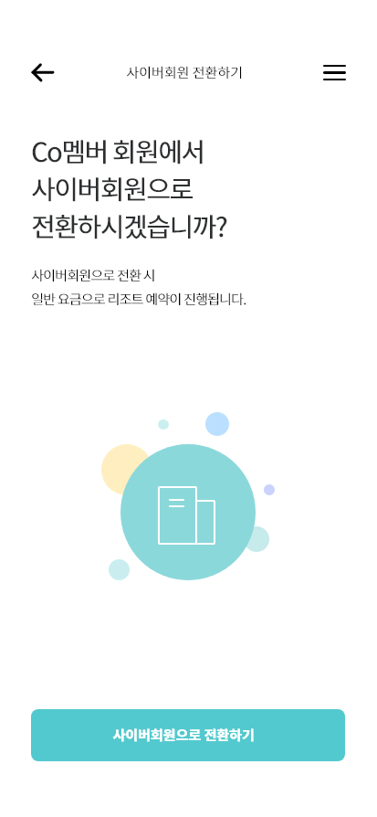
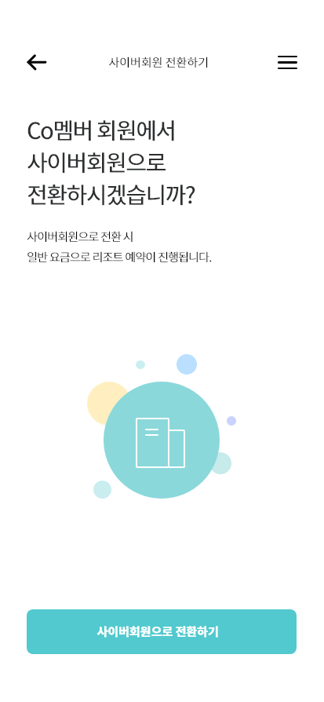
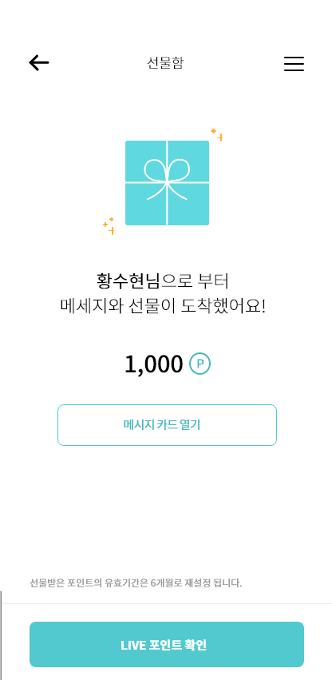
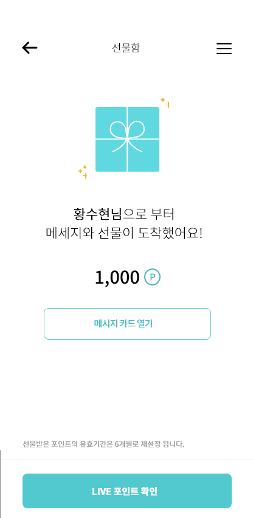

중고차 신차를 사기 위해
가장 많이 하는 행동이 무엇인지를
먼저 고민하였습니다.
차량의 정보, 시세, 주의해야할 사항 등을 찾는데 번거로움과 복잡함을
해결하기 위해 한페이지에서 정보를 찾기에 용이한 구성을 하였습니다.
페이지이동 전에 미리 찾고자 하는 정보를 가볍게 확인할 수 있어 사용자의
페이지 동선을 최소화 할 수 있도록 고민하였습니다.

중고차 신차를 사기 위해
가장 많이 하는 행동이 무엇인지를
먼저 고민하였습니다.
차량의 정보, 시세, 주의해야할 사항 등을 찾는데 번거로움과 복잡함을
해결하기 위해 한페이지에서 정보를 찾기에 용이한 구성을 하였습니다.
페이지이동 전에 미리 찾고자 하는 정보를 가볍게 확인할 수 있어 사용자의
페이지 동선을 최소화 할 수 있도록 고민하였습니다.
한군데서 모든 정보를 얻을 수 있으려면 많은 볼거리, 컨텐츠가 많아야합니다.
복잡하지 않게 구성할 수 있도록 잘 짜여진 레이아웃과 컨텐츠의 기획에 집중하였습니다.
컨텐츠를 요소요소마다 배치하고 시기적절하게 도와주며 말하지 않아도 보여주는,
보고있지 않아도 알려주는 서비스를 만들었습니다.
KB전용서체와 Noto Sans 폰트를 사용하여 KB의 브랜드 통일성과 가독성을 높였습니다.
KB차차차의 주 컬러와 서브컬러를 적용하여 브랜드 아이덴티티를 유지하였습니다.
차량을 쉽고 빠르게 찾을 수 있도록,
사용자의 취향을 분석하여 매칭합니다.
최근 본 차량, 저장해 놓은 차량과 연관되어 있는 정보를 묶어서 보여줍니다.
모든 컨텐츠는 서로 얽혀 있을 수 있도록 태그 (또는 연관컨텐츠, 다른 연결고리) 로 얽혀 있도록 설계했습니다.
 



 
